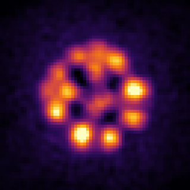
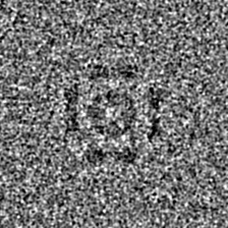
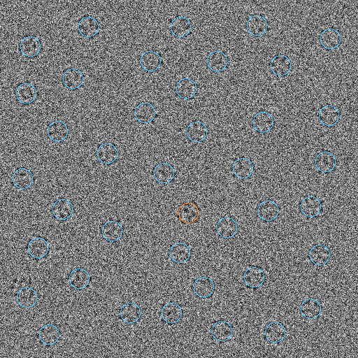
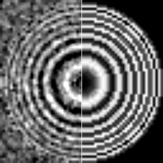
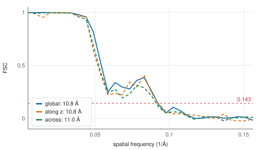
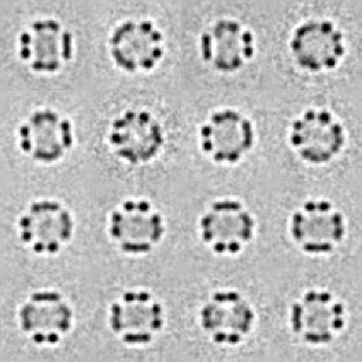
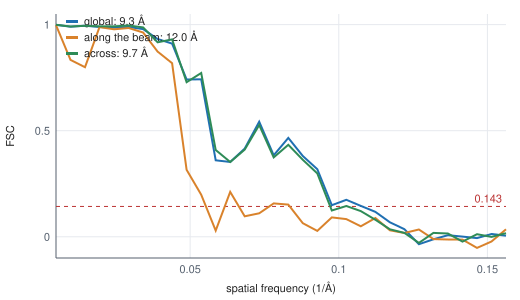

Screen a frozen grid, choose dose, defocus and pixel size, collect and process a single-particle data set, and read its resolution from the Fourier shell correlation. The particle reconstructed here is also a specimen for every other technique.

SOP-06, version 1.0, November 2026 For students and new cryo-EM users, and for planning data collection Simulation only: nothing here controls a real microscope
Seeing with ElectronsTEM-view · Advanced-EM
SOP-06 Single-particle cryo-EMScope and overview
Scope and overview
Single-particle analysis (SPA) records thousands of noisy images of one protein frozen in thin vitreous ice, in random orientations, and averages them in 3D. Each image is a central slice of the particle's 3D Fourier transform; the resolution is judged by the Fourier shell correlation (FSC) of two independent half maps at 0.143.
Particle
Mass
Symmetry
Size
Pixel size
Apoferritin
480 kDa
octahedral (24 subunits)
12 nm hollow shell
3.2 Å (6.4 binned)
β-Galactosidase
465 kDa
D2 (4 subunits)
17.5 × 13.5 × 9 nm
4.0 Å (8.0 binned)
Steps
1
Load the grid and look at one particle
2
Screen: a micrograph and its CTF fit
3
Choose dose, defocus and pixel size
4
Collect and process; read the FSC
5
Diagnose preferred orientation
6
Export, and use the particle elsewhere
Terms used
The CTF (contrast transfer function) is how defocus and aberrations turn phase into image contrast; its zeros are the Thon rings of the power spectrum. Picks are the particle positions found on a micrograph. A 2D class is the average of particles seen from about the same direction. The directional FSC is the FSC in a cone along, or across, the beam.
Rules
Keep the grid below ~140 K. Above it the ice crystallizes; above ~165 K it sublimes and the proteins dry out. Only a fresh grid brings vitreous ice back.
Proteins keep their finest (~3 Å) detail for only a few e⁻/Ų. Every exposure spends that budget.
The orientations come from the simulation plus the alignment error you set; there is no projection-matching search. State this when you show results.
Simulated maps are for teaching and pipeline tests, not for structural conclusions.
Note. The same particle models (pseudo-atoms in protein proportions, ~5 Å detail) are loadable as specimens: Apoferritin and β-Galactosidase in the specimen cards. TEM, STEM, EELS, tomography and 3D ED then see the particle SPA reconstructs.
Seeing with Electrons · TEM-view2
SOP-06 Single-particle cryo-EMStep 1 of 6
Step 1
Load the grid and look at one particle
In The specimen, select the Apoferritin card. The exhibit sets cryo conditions: liquid-nitrogen holder at 90 K, 300 kV, 30 e⁻/Ų, 1.5 µm underfocus, no corrector, 40 nm of ice.
Select TEM. One particle sits in the centre, in ice. It is a weak phase object: at focus it is almost invisible.
Change Defocus between −500 and −3000 nm. Underfocus turns phase into contrast; more underfocus gives more low-resolution contrast and moves the first CTF zero to lower resolution.
Tilt the stage (±30°). The particle turns: its four-fold, three-fold and two-fold views appear in turn.
Watch the dose readout under the image. At ~5 e⁻/Ų (300 kV, 90 K) the high-resolution detail is half gone. Use Load a fresh grid to start again.
Result. A faint ring, 12 nm across, in ice speckle. The contrast of protein against ice is a few percent: this is why SPA averages thousands of images.
Caution. Raising the holder temperature above 140 K devitrifies the ice for the rest of the session. The status line says so.

Fig. 1. One apoferritin particle in 40 nm of vitreous ice, TEM at 300 kV and 1.5 µm underfocus (25 nm field).
Seeing with Electrons · TEM-view3
SOP-06 Single-particle cryo-EMStep 2 of 6
Step 2
Screen: a micrograph and its CTF fit
Select the Cryo-EM SPA technique. The particle follows the specimen card (or choose it under Particle).
A preview runs at once: one 512 × 512 micrograph with about 40 particles, its CTF fit and the picks. View → Micrograph + picks shows it (Fig. 2a): blue rings are picks on particles, orange ones are false picks on ice.
Select View → CTF fit (Fig. 2b). Check that the Thon rings are round and reach well beyond the first zero; the fitted defocus is printed with the true one.
Thicken the ice (Thickness, in The specimen) to 80 nm and look again: contrast and ring visibility fall. Return to 30–50 nm.

Fig. 2a. A micrograph at 40 e⁻/Ų and 1.5 µm underfocus, with the picks: precision 0.97, recall 0.97.

Fig. 2b. Its power spectrum, centred, radial background removed: the Thon rings measured (left) and the fitted |CTF|² (right). Fitted defocus 1.52 µm, true 1.51 µm.
Result. Picks with high precision and recall, and a defocus fit within ~±100 Å of the true value. If not, see Troubleshooting.
Seeing with Electrons · TEM-view4
SOP-06 Single-particle cryo-EMStep 3 of 6
Step 3
Choose dose, defocus and pixel size
Setting
Start at
Too low
Too high
Dose per micrograph
40 e⁻/Ų
Too noisy to pick and align
High-resolution detail burnt away (the damage weighting removes it)
Underfocus (mean)
1.0–2.0 µm
Little low-resolution contrast: particles hard to pick
CTF zeros crowd together; the envelope cuts high resolution
Zernike phase plate
off; on near focus
With the plate, keep underfocus small (≤ 0.5 µm)
Pixel size
3.2 Å (apoferritin)
Binned ×2: Nyquist moves to 12.8 Å, resolution caps there
Particles
1000–2000
Map too noisy: low FSC
Longer processing, small gain past a few thousand
Alignment error
2° rms
Each degree blurs high resolution at the particle's edge
Set the values above. Leave Preferred orientation at 0 % for now.
Open Data, dose and compute. The estimator shows the data volume, the total dose and where the processing would run.
On a slower computer the Particles slider stops at the limit for this device; the full-scale job goes to a lab computer or a cluster (step 6).
Note. Voltage, Cs and the corrector, the focal spread and the convergence all enter the transfer function. A warm holder raises the damage: the same dose loses more high-resolution signal at 120 K than at 90 K.
Seeing with Electrons · TEM-view5
SOP-06 Single-particle cryo-EMStep 4 of 6
Step 4
Collect and process; read the FSC
Select Collect and process. The pipeline runs in the background: micrographs, CTF per group, picking, the particle stack, 2D classes, then two half maps.
View → 2D classes (Fig. 3a). Classes should show distinct views with clear internal detail. False picks that do not match their class average are rejected here.
View → 3D map (Fig. 3b). The right panel shows the FSC and the angular distribution.
Read the resolution at FSC = 0.143 (Fig. 3c), and the directional values along and across the beam.
Result. With the settings of step 3: 1975 of 2000 particles kept, 10.8 Å at FSC 0.143 (10.8 Å along z, 11.0 Å across). Write the values in the record.

Fig. 3c. FSC between the half maps: global, and in cones along and across the beam.

Fig. 3a. 2D class averages (protein dark).Fig. 3b. The reconstruction, projected along an oblique direction: the 24-subunit shell.
Seeing with Electrons · TEM-view6
SOP-06 Single-particle cryo-EMSteps 5 and 6 of 6
Step 5
Diagnose preferred orientation
Set Preferred orientation to 80 % (particles lying flat at the air–water interface) and collect again.
Compare the global FSC with the directional ones (Fig. 4). The global value can look better while the map is stretched along the beam.
Look at the angular distribution: most views cluster at the top.
Result. Global 9.3 Å, but 12.0 Å along the beam and 9.7 Å across: an anisotropic map. Report the directional FSC whenever views are uneven.

Fig. 4. 80 % top views: the FSC along the beam falls first.
Step 6
Export, and use the particle elsewhere
Export maps + classes (.mrc) writes the half maps, the full map, the class averages and a README with every setting.
For the full-scale job, export the HPC bundle (Data, dose and compute). It carries the parameters for RELION or cryoSPARC (SOP HPC-07).
Select the Apoferritin or β-Galactosidase card and choose Tomography to record a subtomogram of one particle, 3D ED to see its diffuse scattering, or STEM and EELS.
In the structure viewer, the same particle turns in 3D with the stage tilt.
Seeing with Electrons · TEM-view7
SOP-06 Single-particle cryo-EMTroubleshooting and record
Troubleshooting
Symptom
Likely cause
Action
Particles invisible in TEM
Near focus, or ice too thick
1–3 µm underfocus, or the phase plate near focus; 30–50 nm ice
Many false picks
Low dose or little defocus
Raise the dose per micrograph or the underfocus
CTF fit far from the true defocus
Rings too weak (thick ice, low dose)
Thinner ice, more dose, more underfocus
FSC stops near 12.8 Å
Binned pixels: Nyquist
Pixel size back to 3.2 Å
Global FSC good, map stretched
Preferred orientation
Read the directional FSC; lower the preferred fraction
Resolution worse after warming
Faster damage, or devitrified ice
Back below 100 K; load a fresh grid
“Proteins dried out”
Above ~165 K the ice sublimed
Cool, then Load a fresh grid
Record
Item
Value or criterion
Initials
Grid cold, ice vitreous
T ______ K; ice ______ nm
Screening micrograph and CTF
Precision ____ ; recall ____ ; defocus error ____ Å
SOP-01 TEM alignment. SOP-07 3D ED. HPC-07 for the full-scale job.
Particles
Apoferritin and β-galactosidase: coarse models at ~5 Å, not atomic structures.
SOP-06 Single-particle cryo-EM, version 1.0, November 2026 Simulation only. Nothing here controls a real microscope. Results from the simulator are not measurements of a real specimen.